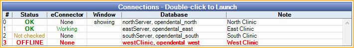

Central Enterprise Management Tool ( CEMT )
See Advanced Topics.
In the Open Dental install folder, run CentralManager.exe.

The Central Enterprise Management Tool (CEMT) allows Multiple Locations to use separate databases at each location, yet have a centrally located management tool to interact with all the databases.
The CentralManager.exe is installed in the same Open Dental folder as the main program. It connects to a mostly blank Open Dental database (e.g., dbcentral) that does not have any patient information or use most of the normal tables. It does have some of its own tables that are ignored by the ordinary Open Dental program.
From this central location, easily:
- Launch database connections.
- Search for patients across multiple databases.
- Set up database connections.
- Check the database connection status and version in contrast to CEMT database version (upper right).
- Configure and sync security settings.
- Run a production and income report for multiple databases at once.
Requirements:
- All offices need to be on a single VPN.
- If using the Middle Tier at each location for increased security, connect over the VPN or over https.
- If using one-way Replication, the CEMT tool should only connect to a local copy of the database, not the remote databases.
Also see:
Central Manager Window

Menu:
- Logoff: Log the current user out of CEMT and open the Log On window.
- File:
- Change Password: Change the password for the currently logged on user. See CEMT Passwords.
- User Settings: Only displays when using Middle Tier. See CEMT User Settings.
- Setup:
- Connections: Set up database connections. See CEMT Connections.
- Groups: Set up categories of database connections (useful for reporting). See CEMT Connection Groups.
- Report Permissions: Control user access to individual standard reports, by user group. See Report Setup: Security Permissions.
- Security: Define security settings (users, user groups, permissions, and lock dates). See CEMT Security.
- Display Fields: Customize which columns of information show when searching for patients. See Display Fields.
- Reports: Run a daily, monthly, annual, or provider production and income report. See CEMT Reports.
- Transfer: Transfer a patient from one database to another. See CEMT Patient Transfer.
- Help
- Query Monitor: Launch Query Monitor. Once started, monitors action from within CEMT only.
- Payload Monitor: Only for practices utilizing Middle Tier. Launch Payload Monitor. Once started, monitors payloads from within CEMT only.
Conn Groups: Click a dropdown option to only view connections for a specific group. Set the default on the Connection Groups window.
Filter Connections: Filter the connections. Enter criteria then click Filter.
- Conn Name: Filter by connection name.
- Clinic: Filter by clinic.
- Provider: Filter by provider.
Refresh Statuses: Click to refresh the connection statuses.
Version: Displays the current CEMT version.
The connections grid displays connection information. Double-click a connection to launch a separate instance of Open Dental for that database. Users are logged on using their CEMT username and password.
- #: Displays the connection order.
- Status: Displays the current connection status. Options show:
- OK: Connection version matches CEMT database version.
- Version x.x.x: If versions are different, the version of the connection is listed.
- OFFLINE: There is a problem connecting to the database.
- Not Checked: Connection status has not been checked yet.
- eConnector: Shows if an eConnector is installed.
- Window: Displays if the database is launched:
- Blank: The database is not launched, or the database was launched in Dynamic Mode so the status cannot be determined.
- Minimized: The database is open but the window is minimized.
- Showing: The database is open and displaying.
- Database: Displays server name and database name.
- Note: Displays any notes about the connection.

Patients can be searched between all connected databases. Enter criteria, then click Search. Patients who match criteria list with their associated database connection.
Troubleshooting
Problem: Name conflicts when syncing users (states which names are in conflict).
Solution: Rename the CEMT user using a unique username. For example, Open Dental user Sally, could use SallyCEMT as her CEMT username. The chances of conflicts are very slim. After renaming users, make sure to sync all Open Dental databases.
Problem: Log in failed message when trying to connect to an Open Dental database.
Solution: Sync the CEMT credentials for the user to the Open Dental database.
Problem: SERVER OFFLINE: incorrect username or password on a middle tier connection.
Solution: Ensure that the username and password exist in the database connection. If unable to push the credentials for the user from the Central Manager, add them to the database with a direct connection.
Problem: CEMT stopped working after an update, and the version is in red font.
Solution: Update CEMT to the version of the database (or higher).
CEMT windows resize themselves when clicking in a grid or some text is cut off in the CEMT interface.
Solution: Override high DPI scaling behavior in Windows for CentralManager.exe (not for OpenDental.exe). See Zoom, Turn Off DPI Awareness, Option 2 for instructions.